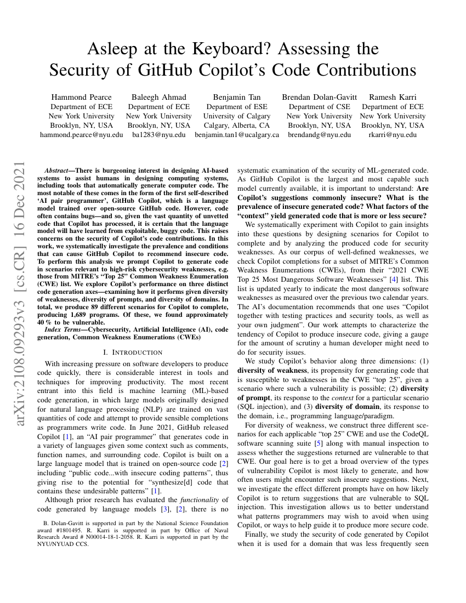

64-bit float → 16-bit integer. The value didn't fit.
Lost 37 s after launch · ≈ $370M
184,467,440,737
bitcoin, from nothing
Bitcoin2010
Two huge outputs summed in a 64-bit integer. The sum wrapped and passed the check.
Cap: 21 million · patched in 5 h
Boeing 7872015
A 32-bit counter overflows after 248 days of continuous power.
All AC power lost · FAA directive
Ariane 501 Inquiry Board Report (ESA/CNES, 1996) · Bitcoin Wiki, “Value overflow incident” (CVE-2010-5139) · FAA AD 2015-09-07, Federal Register 2015-10066 Photos: ESA–CNES–Arianespace / JM Guillon (CC BY 4.0) via Wikimedia Commons · KLM 787-9 at Schiphol, Wikimedia Commons (public domain)
Experts write code
→
Public code
→
LLMs learn
→
LLMs write code
It is human to make errors. But then, how can we trust code?

“…given the vast quantity of unvetted code that Copilot has processed, it is certain that the language model will have learned from exploitable, buggy code.”
≈ 40%
of 1,689 generated programs were vulnerable
H. Pearce, B. Ahmad, B. Tan, B. Dolan-Gavitt, R. Karri. Asleep at the Keyboard? Assessing the Security of GitHub Copilot’s Code Contributions. IEEE S&P 2022
How do we trust code, no matter who wrote it?
Math
FIMP
C
reason about it
✓
✓
✗
run it fast
✗
✓
✓
Best of both worlds, in a limited context.
\(\mathbb{F}_{251}\)
\(\{0, 1, \dots, 250\}\) with \(+\) and \(\cdot\) modulo 251
\(251\) is prime \(\;\Longrightarrow\;\) every \(x \neq 0\) has an \(x^{-1}\) with \(x \cdot x^{-1} \equiv 1 \pmod{251}\)
For \(0 \le Z < 2^{16}\), let \(H = \lfloor Z / 2^8 \rfloor\) and \(L = Z \bmod 2^8\). Then
\(Z \equiv 5H + L \pmod{251}\)
\(Z = 2^8 H + L = 251\,H + (5H + L)\)
\(\langle Z \gg 8, \sigma \rangle \to \lfloor Z / 2^8 \rfloor = H\)
\(\langle Z \mathbin{\&} 255, \sigma \rangle \to Z \bmod 2^8 = L\)
\(Z \;\longmapsto\; 5 \cdot (Z \gg 8) + (Z \mathbin{\&} 255)\)
\(X, Y, R : \mathsf{w8} \qquad Z : \mathsf{w16}\)
1Z := (w16) X × (w16) Y;
2while ¬(Z ≫ 8 = 0) do3 Z := 5 × (Z ≫ 8) + (Z & 255);
4R := (w8) Z;
5if 251 ≤ R then R := R − 251
theorem
For all \(X, Y \in \mathbb{W}_8\), the program terminates with \(R = X \cdot Y \bmod 251\).
Line 1
\(X \cdot Y \le 255^2 = 65025 < 2^{16}\), so \(Z = \langle X \cdot Y \rangle_{16} = X \cdot Y\)
Invariant
\(Z \equiv X \cdot Y \pmod{251} \;\wedge\; Z < 2^{16}\)
Line 3
\(5H + L \le 5 \cdot 255 + 255 = 1530 < 2^{16}\), so nothing wraps, and \(5H + L \equiv Z\) by the lemma
Termination
while \(H > 0\): \(\;5H + L < 2^8 H + L = Z\), so \(Z\) strictly decreases
Lines 4–5
on exit \(H = 0\), so \(R = Z \le 255 < 2 \cdot 251\); subtracting 251 at most once gives \(R \in [0, 251)\)
C := mul(40, X);
X' := mul(182, C)
\(X' = 182 \cdot (40 \cdot X \bmod 251) \bmod 251 = X \qquad \text{for all } X < 251\)
The FIMP program meets the specification.
\(c_1\)
Z := (w16) X × (w16) Y;
while ¬(Z ≫ 8 = 0) do
Z := 5 × (Z ≫ 8) + (Z & 255);
R := (w8) Z;
if 251 ≤ R then R := R − 251
≡ ?
\(c_2\)
Z := (w16) X × (w16) Y;
Z := 5 × (Z ≫ 8) + (Z & 255);
Z := 5 × (Z ≫ 8) + (Z & 255);
Z := 5 × (Z ≫ 8) + (Z & 255);
T := Z − 251;
Z := T + (T ≫ 15) × 251;
R := (w8) Z
\(Z_0 \le 65025\)
\(\Rightarrow\)
\(H \le 254\)
\(\Rightarrow\)
\(Z_1 \le 5 \cdot 254 + 255 = 1525\)
\(Z_1 \le 1525\)
\(\Rightarrow\)
\(H \le 5\)
\(\Rightarrow\)
\(Z_2 \le 5 \cdot 5 + 255 = 280\)
\(Z_2 \ge 256\)
\(\Rightarrow\)
\(H = 1,\ L \le 24\)
\(\Rightarrow\)
\(Z_3 \le 5 + 24 = 29\)
\(Z_2 \le 255\)
\(\Rightarrow\)
\(H = 0\)
\(\Rightarrow\)
\(Z_3 = Z_2 \le 255\)
When \(H = 0\), a fold is the identity: \(\;5 \cdot 0 + L = L = Z\)
all \(\mathsf{w16}\), \(\;Z \le 255\)
T := Z − 251;
Z := T + (T ≫ 15) × 251
\(Z \ge 251:\quad T = Z - 251 < 2^{15} \;\Rightarrow\; T \gg 15 = 0 \;\Rightarrow\; Z := Z - 251\)
\(Z < 251:\quad T = 2^{16} + Z - 251 \ge 2^{15} \;\Rightarrow\; T \gg 15 = 1 \;\Rightarrow\; Z := \langle T + 251 \rangle_{16} = Z\)